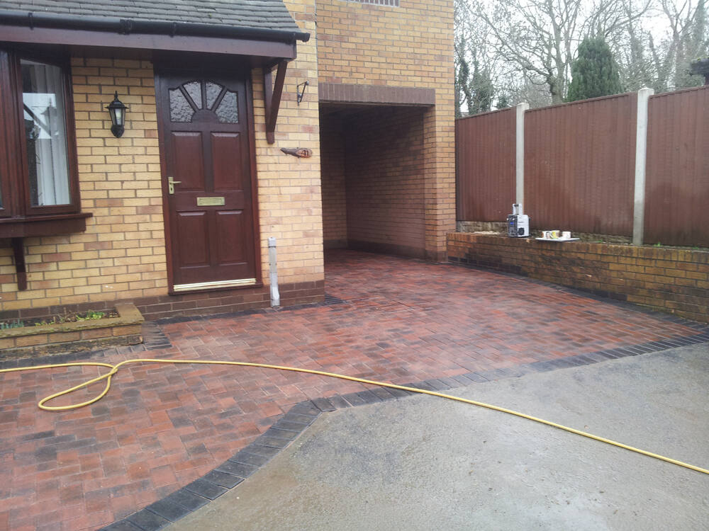

Worsborough Extension

About the project
Day 1 of project construction of a side double storey extension.
JCB on site to excavate footings
Customer requirements were a ground floor utility room with a first floor master bedroom. Existing parking area to the side was still of paramount importance to the customer. Our solution was to create a small utility to the rear extension, also creating a car port (which solves the parking and access issues)
This also allowed us to construct the first floor bedroom and en-suite. However , the extension needed to be built on a concrete raft, due to the nature of the ground in such a confined space, impossible!!, not for manterfield’s, bonus was we also managed to keep the neighbours happy!
Day 3
Excavation complete, 40 tonnes of soil removed now ready for steel and 8 cubic metres of ready mixed concrete and yet still a clean site and again still happy neighbours!
Week 2
Eight days into project, coming along smoothly and on schedule. Scaffold erected, weather fine for the time of year.
End of week 4
Nineteen days into project, roof completed. Flat concrete profile, colour graphite with a dry ridge and verge system (maintenance free) with a nice neat stepped lead flashing into existing brick work to the side of the house. Job well done, shame about the weather!
Completed bedroom with front fully tiled en-suite. Project fully insulated, plastered with electrical and heating installations ready for customer to decorate and lay carpet Last remaining tasks of project to lay a herringbone design block paved driveway and excavation of front garden to create additional parking area
Completion day!!
Full power wash and clean down
Project from start to completion undertaken in under 6 weeks, on time and on budget, more importantly a massive thank you and praise from our customer.